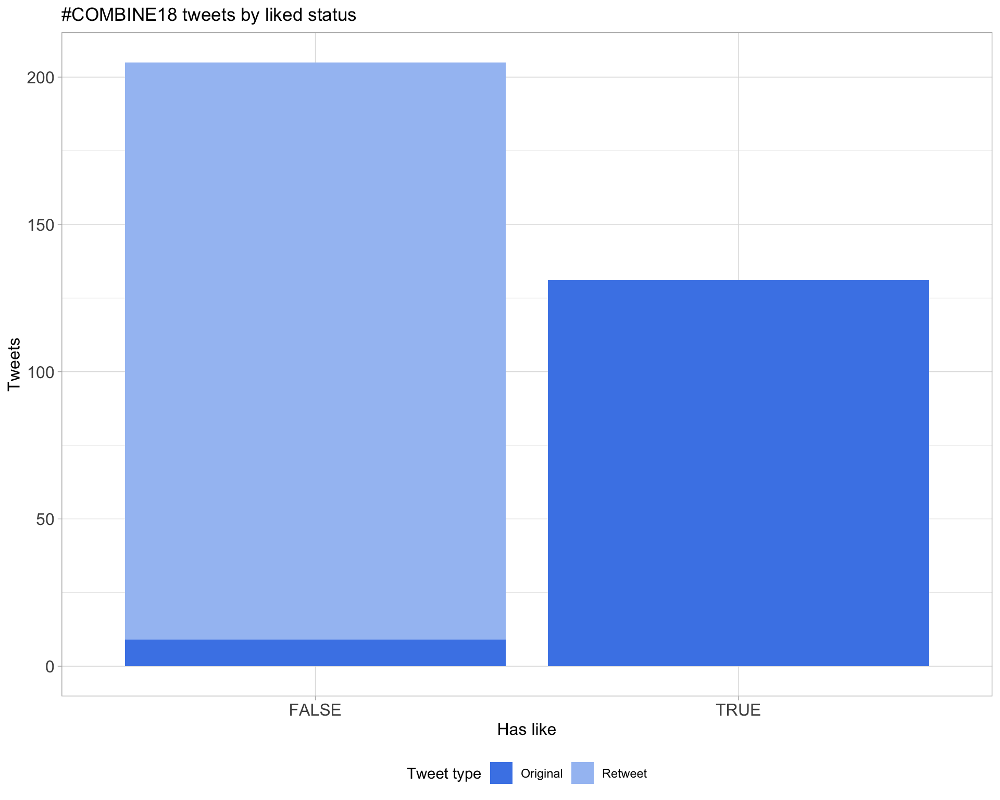
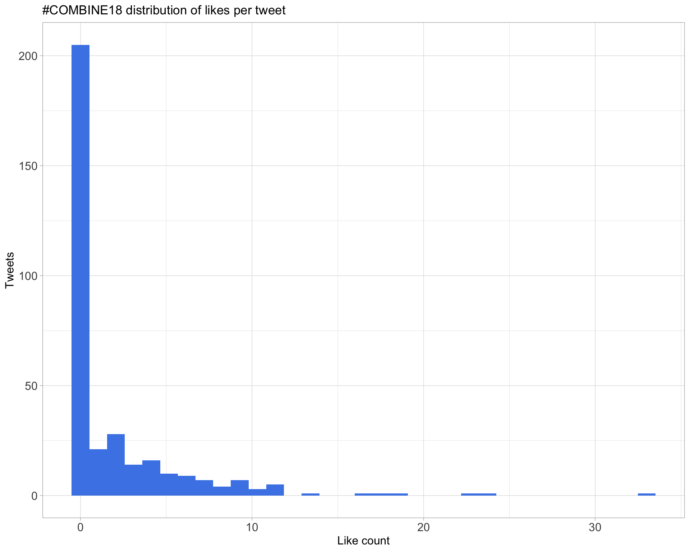
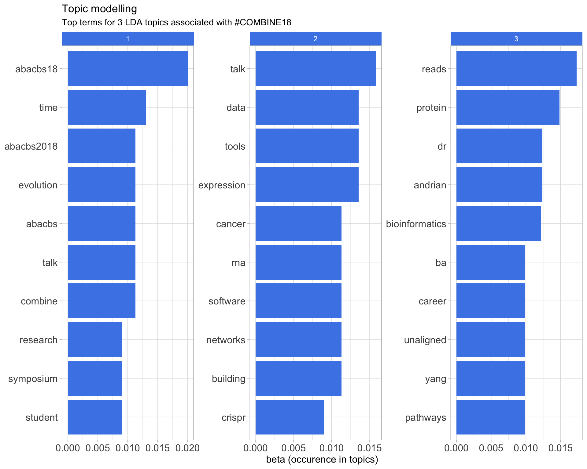

Twitter coverage of the 2018 COMBINE Symposium
Luke Zappia
2018-11-22 11:06:53
Parameters
| Parameter | Value |
|---|---|
| Hashtag | #COMBINE18 |
| Conference | COMBINE Symposium 2018 |
| Time Zone | Australia/Melbourne |
| Days | 2018-11-26 |
| Accent colour | #4a86e8 |
| Pallete | Set1 |
| k-core | 2 |
| Topics k | 9 |
| Bigram filter | 1 |
| Fixed | FALSE |
1 Introduction
An analysis of tweets from the COMBINE Symposium 2018 conference. A total of 13 tweets from 9 users were collected using the rtweet R package.
2 Timeline
2.1 Tweets by day

2.2 Tweets by day and time
Filtered for dates 2018-11-26 - 2018-11-26 in the Australia/Melbourne timezone.
3 Users
3.1 Top tweeters

3.2 Top original tweeters

3.3 Retweet proportion

3.4 Top tweeters by time

3.5 Top tweeters by day
3.5.1 All tweets
3.5.2 Original tweets
3.6 Sources

4 Networks
4.1 Replies
The “replies network”, composed from users who reply directly to one another, coloured by page rank.
4.2 Mentions
The “mentions network”, where users mention other users in their tweets. Filtered for a k-core of 2. Node colour and size adjusted according to PageRank score.

5 Retweets
5.1 Retweet proportion

5.2 Retweet count

5.3 Top retweets
| screen_name | text | retweet_count |
|---|---|---|
| combine_au | Today is the last day to register for #COMBINE18! You don’t want to miss out on hearing students talk about their excellent bioinformatics research https://t.co/frA23Wi19a. https://t.co/Fybmmg0Ktm | 7 |
| combine_au | Instructions for posters at #COMBINE18 are now up on our website https://t.co/a9sYaOvo8r. They must be no larger than A0 portrait size. | 3 |
| combine_au | There are still a few days left to register for #COMBINE18 https://t.co/frA23Wi19a! Registrations close 11:59 PM Wednesday. Come join us for a great day of student science! | 0 |
6 Favourites
6.1 Favourite proportion

6.2 Favourite count

6.3 Top favourites
| screen_name | text | favorite_count |
|---|---|---|
| combine_au | Today is the last day to register for #COMBINE18! You don’t want to miss out on hearing students talk about their excellent bioinformatics research https://t.co/frA23Wi19a. https://t.co/Fybmmg0Ktm | 4 |
| combine_au | Instructions for posters at #COMBINE18 are now up on our website https://t.co/a9sYaOvo8r. They must be no larger than A0 portrait size. | 4 |
| combine_au | There are still a few days left to register for #COMBINE18 https://t.co/frA23Wi19a! Registrations close 11:59 PM Wednesday. Come join us for a great day of student science! | 1 |
| shazanfar | Today is the last day to register for #COMBINE18! You don’t want to miss out on hearing students talk about their excellent bioinformatics research https://t.co/frA23Wi19a. https://t.co/Fybmmg0Ktm | 0 |
| MarcoDeLa83 | Today is the last day to register for #COMBINE18! You don’t want to miss out on hearing students talk about their excellent bioinformatics research https://t.co/frA23Wi19a. https://t.co/Fybmmg0Ktm | 0 |
| iscbsc | Today is the last day to register for #COMBINE18! You don’t want to miss out on hearing students talk about their excellent bioinformatics research https://t.co/frA23Wi19a. https://t.co/Fybmmg0Ktm | 0 |
| JasonWilliamsNY | Today is the last day to register for #COMBINE18! You don’t want to miss out on hearing students talk about their excellent bioinformatics research https://t.co/frA23Wi19a. https://t.co/Fybmmg0Ktm | 0 |
| lazappi | Today is the last day to register for #COMBINE18! You don’t want to miss out on hearing students talk about their excellent bioinformatics research https://t.co/frA23Wi19a. https://t.co/Fybmmg0Ktm | 0 |
| combine_au | Today is the last day to register for #COMBINE18! You don’t want to miss out on hearing students talk about their excellent bioinformatics research https://t.co/frA23Wi19a. https://t.co/Fybmmg0Ktm | 0 |
| lucyleeow | Today is the last day to register for #COMBINE18! You don’t want to miss out on hearing students talk about their excellent bioinformatics research https://t.co/frA23Wi19a. https://t.co/Fybmmg0Ktm | 0 |
7 Quotes
7.1 Quote proportion
7.2 Quote count
7.3 Top quotes
| screen_name | text | quote_count |
|---|---|---|
8 Media
8.1 Media count
8.2 Top media
| screen_name | text | favorite_count |
|---|---|---|
| combine_au | Today is the last day to register for #COMBINE18! You don’t want to miss out on hearing students talk about their excellent bioinformatics research https://t.co/frA23Wi19a. https://t.co/Fybmmg0Ktm | 4 |
8.2.1 Most liked media image

9 Tweet text
9.1 Word cloud
The top 100 words used 3 or more times.

9.2 Bigram graph
Words that were tweeted next to each other at least 1 times.

9.3 Topic modelling
Top 10 words associated with 9 topics identified by LDA.

9.3.1 Representative tweets
Most representative tweets for each topic
Topic 1
| topic | screen_name | text | gamma |
|---|---|---|---|
| 1 | combine_au | Instructions for posters at #COMBINE18 are now up on our website https://t.co/a9sYaOvo8r. They must be no larger than A0 portrait size. | 0.1147301 |
Topic 2
| topic | screen_name | text | gamma |
|---|---|---|---|
| 5 | combine_au | Today is the last day to register for #COMBINE18! You don’t want to miss out on hearing students talk about their excellent bioinformatics research https://t.co/frA23Wi19a. https://t.co/Fybmmg0Ktm | 0.1137025 |
Topic 3
| topic | screen_name | text | gamma |
|---|---|---|---|
| 6 | combine_au | There are still a few days left to register for #COMBINE18 https://t.co/frA23Wi19a! Registrations close 11:59 PM Wednesday. Come join us for a great day of student science! | 0.1132457 |
10 Software
Software mentioned in Tweets with links to GitHub, Bioconductor or CRAN.
Session info
## setting value
## version R version 3.5.1 (2018-07-02)
## system x86_64, darwin15.6.0
## ui X11
## language (EN)
## collate en_AU.UTF-8
## tz Australia/Melbourne
## date 2018-11-22
##
## package * version date source
## assertthat 0.2.0 2017-04-11 CRAN (R 3.5.0)
## backports 1.1.2 2017-12-13 CRAN (R 3.5.0)
## base * 3.5.1 2018-07-05 local
## bindr 0.1.1 2018-03-13 CRAN (R 3.5.0)
## bindrcpp * 0.2.2 2018-03-29 CRAN (R 3.5.0)
## broom 0.5.0 2018-07-17 CRAN (R 3.5.0)
## cli 1.0.0 2017-11-05 CRAN (R 3.5.0)
## colorspace 1.3-2 2016-12-14 CRAN (R 3.5.0)
## compiler 3.5.1 2018-07-05 local
## crayon 1.3.4 2017-09-16 CRAN (R 3.5.0)
## curl 3.2 2018-03-28 CRAN (R 3.5.0)
## datasets * 3.5.1 2018-07-05 local
## devtools 1.13.6 2018-06-27 cran (@1.13.6)
## digest 0.6.16 2018-08-22 CRAN (R 3.5.0)
## dplyr * 0.7.6 2018-06-29 cran (@0.7.6)
## evaluate 0.11 2018-07-17 CRAN (R 3.5.0)
## fansi 0.3.0 2018-08-13 CRAN (R 3.5.0)
## forcats * 0.3.0 2018-02-19 CRAN (R 3.5.0)
## ggforce 0.1.3 2018-07-07 CRAN (R 3.5.0)
## ggplot2 * 3.0.0 2018-07-03 CRAN (R 3.5.0)
## ggraph * 1.0.2 2018-07-07 CRAN (R 3.5.0)
## ggrepel * 0.8.0 2018-05-09 cran (@0.8.0)
## glue 1.3.0 2018-07-17 CRAN (R 3.5.0)
## graphics * 3.5.1 2018-07-05 local
## grDevices * 3.5.1 2018-07-05 local
## grid 3.5.1 2018-07-05 local
## gridExtra 2.3 2017-09-09 CRAN (R 3.5.0)
## gtable 0.2.0 2016-02-26 CRAN (R 3.5.0)
## here * 0.1 2017-05-28 CRAN (R 3.5.0)
## highr 0.7 2018-06-09 CRAN (R 3.5.0)
## htmltools 0.3.6 2017-04-28 CRAN (R 3.5.0)
## httr 1.3.1 2017-08-20 CRAN (R 3.5.0)
## igraph * 1.2.2 2018-07-27 CRAN (R 3.5.0)
## janeaustenr 0.1.5 2017-06-10 CRAN (R 3.5.0)
## jsonlite 1.5 2017-06-01 CRAN (R 3.5.0)
## knitr * 1.20 2018-02-20 CRAN (R 3.5.0)
## labeling 0.3 2014-08-23 CRAN (R 3.5.0)
## lattice 0.20-35 2017-03-25 CRAN (R 3.5.1)
## lazyeval 0.2.1 2017-10-29 CRAN (R 3.5.0)
## lubridate * 1.7.4 2018-04-11 CRAN (R 3.5.0)
## magrittr 1.5 2014-11-22 CRAN (R 3.5.0)
## MASS 7.3-51 2018-10-16 CRAN (R 3.5.0)
## Matrix 1.2-14 2018-04-13 CRAN (R 3.5.1)
## memoise 1.1.0 2017-04-21 CRAN (R 3.5.0)
## methods * 3.5.1 2018-07-05 local
## modeltools 0.2-22 2018-07-16 CRAN (R 3.5.0)
## munsell 0.5.0 2018-06-12 cran (@0.5.0)
## nlme 3.1-137 2018-04-07 CRAN (R 3.5.1)
## NLP 0.1-11 2017-08-15 CRAN (R 3.5.0)
## openssl 1.0.2 2018-07-30 CRAN (R 3.5.0)
## parallel 3.5.1 2018-07-05 local
## pillar 1.3.0 2018-07-14 CRAN (R 3.5.0)
## pkgconfig 2.0.2 2018-08-16 CRAN (R 3.5.0)
## plyr 1.8.4 2016-06-08 CRAN (R 3.5.0)
## purrr * 0.2.5 2018-05-29 CRAN (R 3.5.0)
## R6 2.2.2 2017-06-17 CRAN (R 3.5.0)
## RColorBrewer * 1.1-2 2014-12-07 CRAN (R 3.5.0)
## Rcpp 0.12.18 2018-07-23 CRAN (R 3.5.0)
## reshape2 1.4.3 2017-12-11 CRAN (R 3.5.0)
## rlang 0.2.2 2018-08-16 CRAN (R 3.5.0)
## rmarkdown 1.10 2018-06-11 CRAN (R 3.5.0)
## rprojroot 1.3-2 2018-01-03 CRAN (R 3.5.0)
## rtweet * 0.6.7 2018-06-20 CRAN (R 3.5.0)
## scales 1.0.0 2018-08-09 CRAN (R 3.5.0)
## slam 0.1-43 2018-04-23 CRAN (R 3.5.0)
## SnowballC 0.5.1 2014-08-09 CRAN (R 3.5.0)
## stats * 3.5.1 2018-07-05 local
## stats4 3.5.1 2018-07-05 local
## stringi 1.2.4 2018-07-20 CRAN (R 3.5.0)
## stringr * 1.3.1 2018-05-10 CRAN (R 3.5.0)
## tibble 1.4.2 2018-01-22 CRAN (R 3.5.0)
## tidyr * 0.8.1 2018-05-18 CRAN (R 3.5.0)
## tidyselect 0.2.4 2018-02-26 CRAN (R 3.5.0)
## tidytext * 0.1.9 2018-05-29 CRAN (R 3.5.0)
## tm 0.7-5 2018-07-29 CRAN (R 3.5.0)
## tokenizers 0.2.1 2018-03-29 CRAN (R 3.5.0)
## tools 3.5.1 2018-07-05 local
## topicmodels * 0.2-7 2017-11-03 CRAN (R 3.5.0)
## tweenr 0.1.5 2016-10-10 CRAN (R 3.5.0)
## units 0.6-0 2018-06-09 CRAN (R 3.5.0)
## utf8 1.1.4 2018-05-24 CRAN (R 3.5.0)
## utils * 3.5.1 2018-07-05 local
## viridis * 0.5.1 2018-03-29 CRAN (R 3.5.0)
## viridisLite * 0.3.0 2018-02-01 cran (@0.3.0)
## withr 2.1.2 2018-03-15 CRAN (R 3.5.0)
## wordcloud * 2.6 2018-08-24 CRAN (R 3.5.0)
## xml2 1.2.0 2018-01-24 CRAN (R 3.5.0)
## yaml 2.2.0 2018-07-25 CRAN (R 3.5.0)